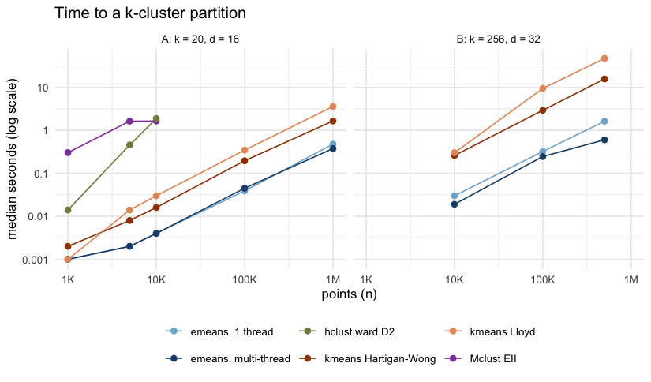
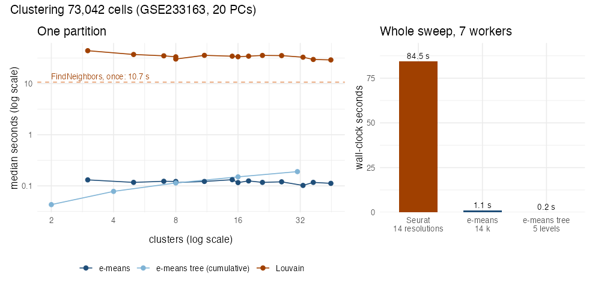

An R implementation of e-means (Bessa et al., 2026, arXiv:2611.09501), a mini-batch replacement for Lloyd’s k-means. Each centroid follows an exponential moving average of its mini-batch means, and fitted scaling laws set the batch size and step size, so you only supply the data, k and an epoch budget. The paper reports a lower within-cluster sum of squares than 25 Lloyd iterations after a few epochs; the benchmark below shows where that holds.
The compute core (nearest-centroid assignment and the EMA updates) is Rust, multi-threaded on the CPU. The training recipe follows the reference library, faiss/contrib/e_means, and gives the same batch size and step size for the same n, k, d and epoch budget.
Installation
You need a Rust toolchain (rustc >= 1.71 and cargo): apt-get install cargo rustc, dnf install cargo, brew install rust, or rustup. All Rust dependencies ship with the package, so the build needs no network access.
# install.packages("remotes")
remotes::install_github("ToledoEM/emeansR")Example
library(emeansR)
set.seed(1)
centers <- matrix(rnorm(256 * 32, sd = 3), 256)
x <- centers[sample(256, 1e5, TRUE), ] + matrix(rnorm(1e5 * 32), 1e5)
fit <- emeans(x, k = 256, nepochs = 3)
fit$tot.withinss / nrow(x) # mean squared distance to the nearest center
predict(fit, x[1:5, ]) # cluster labels for new rowsemeans() returns an object that also inherits from kmeans, with the usual cluster, centers, size, withinss and tot.withinss components.
On an Apple M2 (7 threads), this example took 0.20 s with a loss of 54.7. stats::kmeans(algorithm = "Lloyd", iter.max = 25) from random rows took 9.3 s and reached 64.5.
Other features:
-
spherical = TRUEclusters unit vectors by cosine similarity. -
precision = "single"computes distances in float32. -
max_points_per_centroidtrains on a random subset, asfaiss.Kmeansdoes. -
emeans_stream()and its companions train on data supplied in chunks, for data that does not fit in memory. -
emeans_recipe()shows the batch size and step size the scaling laws pick.
Benchmark
Median time to a k-cluster partition for emeans(), kmeans(), hclust() and Mclust() on two synthetic scenarios (5 seeds each, Apple M2). hclust() and Mclust() stop at n = 10,000 because their memory grows with n².

With 256 clusters, emeans() is 12 to 26 times faster than kmeans() (26 times at n = 500,000) at similar quality. With 20 well-separated clusters it is the fastest method, but hclust() and Mclust() find better partitions. The benchmark article has the quality results and caveats.
Single-cell data
On 73,042 mouse cells from GEO GSE233163 (20 principal components, Apple M2, 7 cores for both methods), Seurat’s neighbour graph plus Louvain at 14 resolutions took 84.5 s. emeans() at the same 14 cluster counts took 1.1 s, and a five-level bisecting tree (31 clusters) took 0.2 s.

The single-cell article builds the tree, checks its stability across seeds and compares it with Louvain and the authors’ cell types.
emeans() works on any cell embedding, so it fits a Seurat workflow after RunPCA():
Seurat Integration with e-means
library(Seurat)
library(emeansR)
obj <- NormalizeData(obj) |> FindVariableFeatures() |> ScaleData() |> RunPCA(npcs = 30)
pcs <- Embeddings(obj, "pca")[, 1:20]
fit <- emeans(pcs, k = 16, nepochs = 3, seed = 1)
obj$emeans <- factor(fit$cluster)
Idents(obj) <- "emeans"
obj <- RunUMAP(obj, dims = 1:20)
DimPlot(obj, group.by = "emeans")Citation
citation("emeansR")Bessa S, Mazaré P-E, Szilvasy G, Touvron H, Picard D, Douze M, Jégou H (2026). e-means: outperforming k-means (in one-tenth the epochs). arXiv:2611.09501.